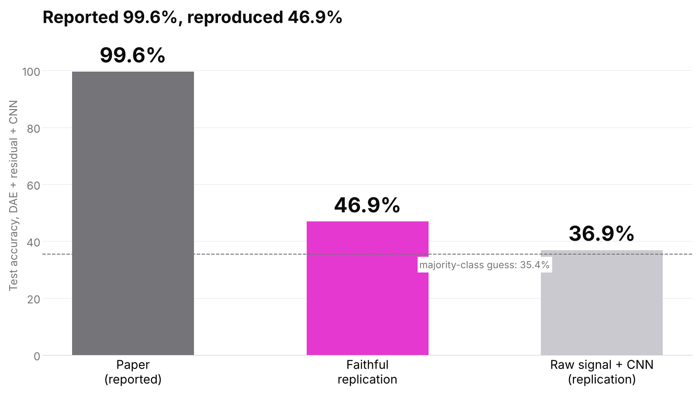
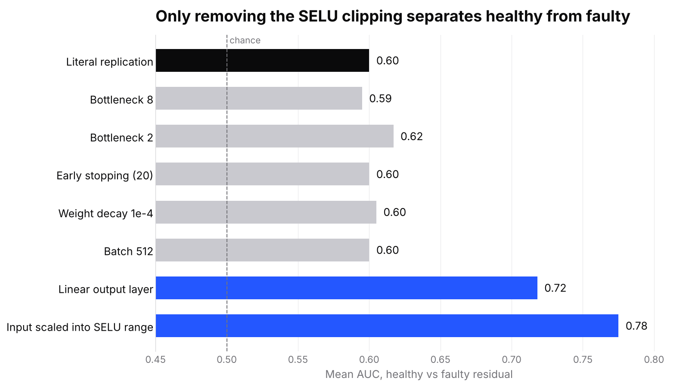

Data & ML
Re-testing a published bearing-fault classifier
A paper reports 99.6% accuracy diagnosing bearing faults from motor current with an autoencoder + CNN. My reconstruction of the method reached 46.9%, and I identified an output-range limitation that dominated the reconstruction error in my implementation.
- reported vs my reconstruction
- 99.6% → 46.9%
- of samples outside the decoder's output range
- 25.4%
- AUC after removing the clipping
- 0.60 → 0.77

- Reconstructed the published method — same bearings, architecture matched to the paper's parameter counts, same protocol — on real Paderborn motor-current data; undeclared choices are stated in the notebooks.
- Identified an output-range limitation: the SELU output layer cannot go below −1.758 while the current reaches about −3 A, so in my implementation the residual mostly measured clipping.
- Ran one-change-at-a-time experiments and designed a stricter evaluation where whole bearings are held out for testing.
- Python
- PyTorch
- Autoencoders
- 1D CNN
- scikit-learn
- Signal processing
01
The question
Bearing faults are a leading cause of electric-motor failure, and diagnosing them from the motor current — a signal you already have — avoids extra vibration sensors. A 2021 paper proposes a deep autoencoder trained only on healthy bearings: its reconstruction error (the residual) should be small for healthy bearings and large for damaged ones, and a CNN classifies the residual. It reports 99.6% accuracy.
I wanted to know whether that result holds when the method is reconstructed as described, on the real-damage bearings of the Paderborn KAt dataset.
02
Reconstructing the method
- Same 17 bearings and operating condition as the paper (6 healthy, 5 outer-race, 6 inner-race, all with real damage from accelerated life tests); the condition was inferred from the paper's segment count.
- Architecture matched to the paper's per-layer parameter counts, which pins down undeclared details such as kernel size; every choice the paper doesn't specify is stated.
- Data integrity checked before any model: 1,360 expected recordings inventoried, one mechanical revolution per frame (2,560 samples at 64 kHz and 1,500 rpm).
Result: 46.9% test accuracy against the paper's 99.6%, barely above always guessing the most common class (35.4%). The residual ratios between faulty and healthy bearings were 1.04 and 1.14, against the 3.71 and 4.61 the paper reports — in my implementation the residual didn't separate the classes.
03
What dominated the error
The paper uses SELU activations on every layer, including the output. SELU cannot produce values below −1.758, but the unnormalized motor current peaks around ±3 A. In my implementation 25.4% of all samples are therefore unreachable for the decoder, and every frame contains some.
That clipping dominates the residual: 89.5% of its energy sits on the clipped samples, so the ‘fault signature’ mostly reflects how much each signal gets cut off. Looking bearing by bearing was consistent with this: residuals differ by a factor of 2 between individual specimens, but only by 9.5% between healthy and faulty on average.
I then changed one thing at a time with fixed data and seeds. Tighter bottlenecks, early stopping, weight decay, batch size and learning rate left the AUC at about 0.60. Only removing the clipping helped: a linear output layer gave 0.72, and scaling the input into the SELU range — keeping the paper's architecture — gave 0.77. That still falls well short of the reported results, so the clipping is one identified factor, not a full explanation of the gap.

04
A stricter evaluation
The paper splits segments 80/20 at random, so slices of the same 4-second recording end up in both training and test — a data leak. I reproduced it on purpose in the replication, so the gap could not be blamed on a different split, and kept the honest comparison for later.
The statistical-feature baselines (SVM, Random Forest, KNN) reached a median of 63–72% over 100 different splits — higher than the paper reports for them, while the deep method came out far lower.
The follow-up protocol, implemented in the public notebooks, scales the work up to 29 bearings and all 4 operating conditions, holds out entire bearings for testing, and asks the industrial question directly: train on cheap artificial damage, test on real damage, and check whether well-run-in healthy bearings trigger false alarms.
05